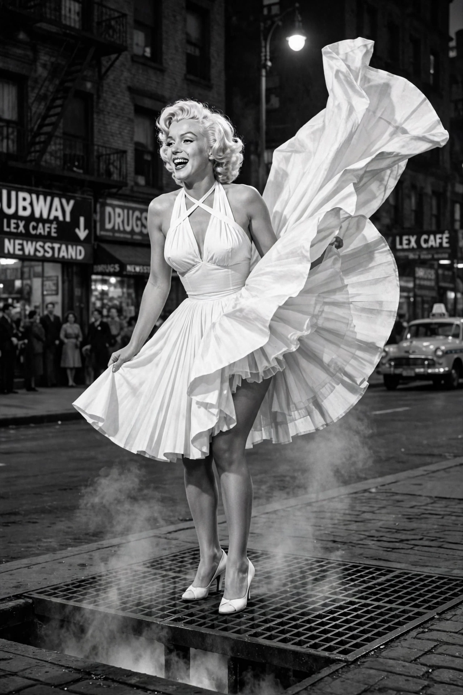

Marilyn Monroe
From Wikipedia, the free encyclopedia

Marilyn Monroe (born Norma Jeane Mortenson; 1 June 1926 – 4 August 1962) was an American actress and model. One of the most popular sex symbols of the 1950s and early 1960s, she starred in a succession of hit comedies and dramas — including Gentlemen Prefer Blondes, The Seven Year Itch, Some Like It Hot and The Misfits — and became an enduring cultural icon despite her death at 36.
Early life and career
Born in Los Angeles and raised in foster homes and an orphanage after her mother's mental illness, Monroe married at 16, worked in a munitions factory during the war and was discovered as a model. Signed by 20th Century Fox, she took the name Marilyn Monroe in 1946 and rose through small parts to stardom in 1953 with Niagara, Gentlemen Prefer Blondes and How to Marry a Millionaire.
Stardom and later career
Monroe fought the studio's 'dumb blonde' typecasting: she studied at the Actors Studio under Lee Strasberg, founded Marilyn Monroe Productions, and won a contract renegotiation. She married and divorced baseball star Joe DiMaggio (1954) and playwright Arthur Miller (1956–1961). Her comic performance in Some Like It Hot (1959) won a Golden Globe; The Misfits (1961), written by Miller, was her last completed film. Her rendition of 'Happy Birthday' to President John F. Kennedy in May 1962 became a legendary pop-culture moment.
Death and legacy
Monroe was found dead at her Brentwood home on 4 August 1962; the coroner ruled the cause an overdose of barbiturates, a probable suicide. Troubled productions, chronic illness and struggles with addiction marked her final years. Posthumously she became one of the most recognisable faces of the twentieth century — the subject of Andy Warhol's silkscreens, countless biographies and continuing debate about the studios' treatment of women.